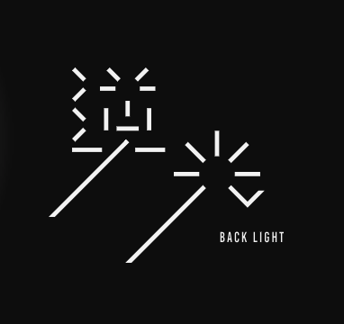

忘年会2025
開催レポート & メンバー紹介
2025年の瀬、広島の「Bar Last Tango in Paris」の3階を貸し切り、株式会社逆光主催の忘年会が開催されました。
集まったのは、広島を拠点に活動するデザイナー、ライター、フォトグラファー、映像クリエイター、エンジニア、そして便利屋まで。
お食事は、日之出水産が運営する練り物専門店「ネッテ」の「練り物」や「カリカリがんす」。
皆さん、ぜひ「ネッテ」に行ってくださいね！
酒と美食、そしてクリエイティブな会話に酔いしれた一夜の全記録です。
🤝 参加メンバー紹介
佐々木 勇
株式会社逆光 代表
- 【エピソード】:
- 「Webサイト？やめとけ」: 波多野さんが独立直後に「HP作りたい」と相談に来た際、「まだその段階じゃない」と一蹴。「機能が情緒を上回ることはない」という信念のもと、まずは思想とブランディングの確立を叩き込みました。
- 「如水館のパンフレットで入学即決」: 倉田さんが制作した如水館中学校のパンフレットを見て、「ここなら！」と息子の受験を決意。
- 【プレゼント】:
hibi（マッチ型アロマ）
「デザインのアイデアに行き詰まった時に使ってほしい」と、自身が欲しかったものをセレクト。
佐々木 美月
株式会社逆光
- 【エピソード】:
- 今回のプレゼント選びでは、「本当はたまごっち（1万円）をあげたかったけど予算オーバー」で断念。その代わり、トレンドを押さえたアイテムをチョイス。
- 【プレゼント】: 「写ルンです」
「エモい写真を撮って欲しい」
西岡 真奈美
デザイナー / ライター
- 【エピソード】:
- 大進創寫舘での仕事を通じて逆光チームと連携。
- クリエイターの健康を第一に考える「お母さん」的視点を持つ。
- 【プレゼント】:
「あずきのチカラ（目元用）」
「デジタル作業で疲れた目を癒やしてほしい。レンチンすると一瞬で寝れます」という実体験に基づく「ガチ」なケア用品。
真殿 理瑛
デザイナー
- 【エピソード】:
- 「元保育士」: 4年前まで保育士をしていた異色の経歴。そこからデザインを学び、現在はバリバリのデザイナーに。
- 【プレゼント】:
ハンドソープ（オートディスペンサー）
「自分じゃ買わないけどあったら嬉しい」枠。
清水 礼子
フォトグラファー / 映像クリエイター
- 【エピソード】:
- キャリア25年以上のベテラン。現在は動画制作、ショートドラマ、映画の現場（エンドロール掲載！）など活動領域を拡大中。
- 「2026年のテーマは未来の先取り」: 常に新しいことに挑戦し続ける姿勢を表明。
- 【プレゼント】: 本格パエリアセット ＆
梨のシードル
「一人暮らしでも、誰かを呼ぶきっかけになれば」。お家時間をパーティーに変える、愛のあるセット。
オリシゲ シュウジ
グラフィックデザイナー / イラストレーター / ディレクター
- 【エピソード】:
- デザインだけでなく、プロジェクト全体の「取りまとめ」やディレクションもこなす要石。
- 真殿さんの先生でもある。
- 【プレゼント】:
Aesop（ハンドクリーム等）
「逆光の集まりにはおしゃれな人しか来ないだろう」と予測し、「大人の豊かさ」をテーマに選定。
奥村 大佑
「甘党 はち乃木」代表
- 【エピソード】:
- 「ご近所のご縁」: 事務所がたまたま逆光の近くだったことから交流が始まり、共同で「鯛焼き」プロダクト（パッケージ：倉田さん）を開発。
- 「ボイパ披露！」: 趣味のアカペラ（ボイパ担当）への熱量がすごく、実際に少し披露してくれましたが、めちゃくちゃ上手かったです。
- 【プレゼント】:
紅茶の詰め合わせ
本通りの紅茶専門店でセレクト。「色んなフレーバーが入っていて長く楽しめる」気配りの品。
杉岡 陸
映像クリエイター
- 【エピソード】:
- 「以前からのご縁」: かつて廿日市の現場で佐々木さんが携わるプロジェクトでカメラアシスタントをしていた。時を経て再会し、現在は宮島の映像などを共に制作。
- 「選挙と映像」: 選挙関連の映像制作など、硬派な現場でも活躍中。
- 【プレゼント】: パロサント（香木）＆
専用プレート
「僕も香り系なんです。木を燃やして香りを楽しむ、焚き火のような時間を」。ハイセンスなチョイス。
倉田 美幸
デザイナー
- 【エピソード】:
- 「乾杯の音頭」: 急な無茶振りにも関わらず、素晴らしい乾杯の音頭をありがとうございました！
- 「如水館パンフの激闘」: 昨年制作した如水館中学校のパンフレット。先生との熱いやり取りを経て、素晴らしいクオリティに仕上げました。その熱意が、最高の成果物を生みました。
- 夫・圭司さんと共に「カフェバー」開業の夢も追う。
- 【プレゼント】:
カンボジアの生胡椒（塩漬け）
「卵かけご飯に乗せると絶品。お酒のアテにもなる」。知人が扱っているこだわりの逸品。
岩本 圭司
PC博士（ハードウェア） / バー開業準備中
- 【エピソード】:
- 美幸さんの夫。PC組み立てなどハードウェアに強い。
- 「Bar × eSports」: 現在、銀行と融資交渉中！広島にない「BarとeSports」を掛け合わせた新店舗を計画中。「来年の忘年会はそこで！」との声も。
- 【プレゼント】:
丸氷製氷器（アイスボールメーカー）
「ウイスキーをロックで飲む時、透明で丸い氷だと最高だから」。1個しか作れないが、クオリティの高い氷ができるグッズ。
上野 慎之介
コーダー / ディレクター
- 【エピソード】:
- デザインやディレクションの視点を持ってコーディングできるのが強み。
- 「広島青春テラス」: 人生のテーマは「青春」。24〜35歳を対象としたマッチングサービスを立ち上げ、1/24-25に試験開催予定。参加者募集中（切実）。
- 「もし周りに恋愛したい人いたら紹介してください！」
- 【プレゼント】:
こだわりスイーツ
「僕に刺さりすぎて家に何十個もストックがある」という激推しスイーツ。
波多野 公平
便利屋 (東広島)
- 【エピソード】:
- 独立3年目。勇さんとは「車仲間」。
- Webもデザインも分からない状態で勇さんに相談し、「思想（ブランディング）」を叩き込まれる。
- 「取り柄は行動力」: こだわりの品を求めて現地へ。
- 【プレゼント】:
倉敷帆布の小物
「通販にはない、現地でしか買えない、在庫限りのレア物」。
ていてい
フリーランス
- 【エピソード】:
- 「昨日会ったばかり」: 波多野さんと現場が一緒で、忘年会の前日（昨日）に勇さんを紹介され、即参加が決まったというスピードスター。
- バイクスタントのイベントを主催。「もっと面白く、大きく」をモットーに活動中。
- 【プレゼント】: PAPIER
D'ARMENIE（紙のお香）
「社長が言うセンス」として選ばれた一品。急遽参加が決まった中で、間違いのないセンスを発揮。
森田 陽樹
株式会社ラクス 営業
- 【エピソード】:
- 那由他のスタバ時代のバイト仲間。「楽楽精算」のラクス営業マン。
- 「公認会計士志望」: 現在勉強中。将来的には独立し、那由他のお金周りや、みんなの財務をサポートする（予定）。
- 【プレゼント】:
ラルフローレンの靴下
「一周回って王道。クリスマスプレゼントの正解はこれ」。おしゃれクリエイター集団の中で、あえての「ベタ」という逆張りを見せる。
秋山 那由他
ナレーター / 文筆
- 【エピソード】:
- 今回の幹事＆音声収録＆記事作成担当。
- 毎週火曜日更新のPodcast「逆張りマーケラジオ」ディレクター。
- 【プレゼント】:
非公式「逆光スウェット」
勝手に逆光ロゴを入れた世界に一つのスウェット。
🎙️ 毎週火曜日は「逆張りマーケラジオ」
逆光メンバーの思考や裏側を配信中。毎週火曜日の更新をぜひお聴きください！
Spotifyで聴く